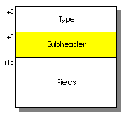
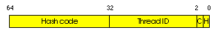
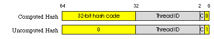
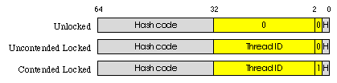

Electrical FireDesignRuntimeMonitors and Hash Codes64-Bit Implementation |
|
On a 64-bit address machine we put an object's monitor and its hash code into a single doubleword -- the object's subheader at offset 8 in the object. Figure 1 shows the placement of the subheader in an object. Figure 2 shows the layout of the bits in the subheader.
|  |
| Figure 1 |
|---|
|  |
| (a) Subheader bits |
|  |
| (b) Hash code states |
|  |
| (c) Monitor states |
| Figure 2 |
|---|
Unlike the 32-bit case, the hash code bits and monitor bits are separate and independent in a 64-bit subheader.
A subheader s's hash code bits can be in one of the two
states below. There is no extended hash code pool.
| Computed Hash | The object's hash value is the given signed 32-bit integer: s>>32. |
| Uncomputed Hash | The object's hash value has not been computed yet. |
A subheader s's monitor bits can be in one of the three
states below. A thread ID is some unique 30-bit identifier of a thread.
The procedures for entering and exiting a monitor and reading and writing hash codes are similar to their 32-bit brethren but simpler because the hash code bits and monitor bits are separate and independent. Instead of saving the subheader in a function's stack frame, MonitorEnter needs only save a flag that states whether the monitor was recursively entered.